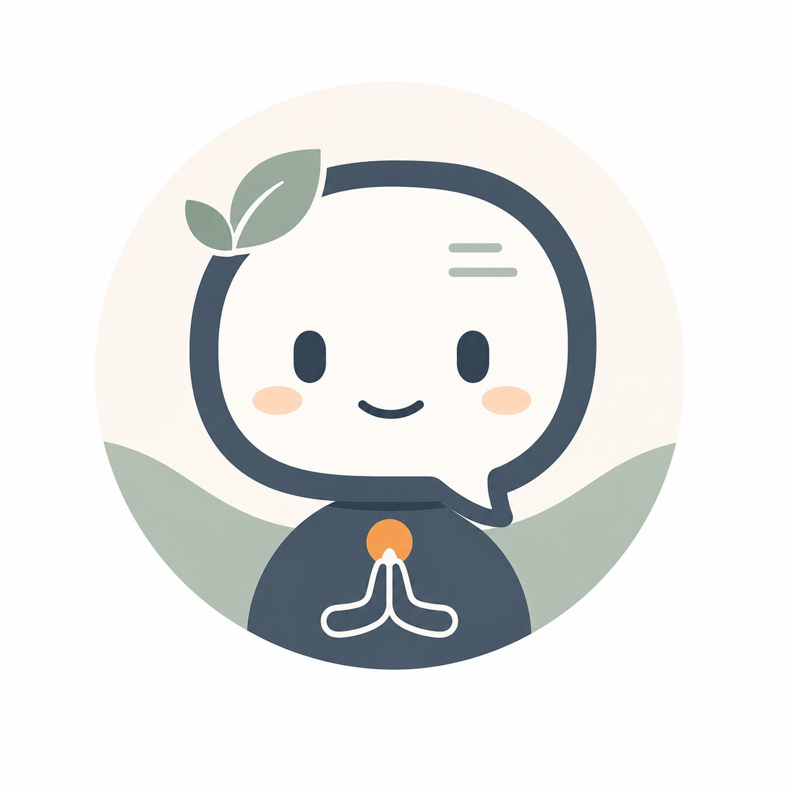

<!DOCTYPE html>
<html lang="en">
<head>
<meta charset="UTF-8">
<meta name="viewport" content="width=device-width, initial-scale=1.0, maximum-scale=1.0">
<title>Lumi — MiCBT Practice Companion</title>
<style>
* { margin:0; padding:0; box-sizing:border-box; }
html, body, #root { height:100%; }
body { font-family:-apple-system,BlinkMacSystemFont,"Segoe UI",Roboto,Helvetica,Arial,sans-serif; background:#F6F2EC; }
@keyframes dot {
  0%,100% { opacity:.25; transform:scale(.75); }
  50% { opacity:1; transform:scale(1); }
}
@keyframes fadeUp {
  from { opacity:0; transform:translateY(8px); }
  to { opacity:1; transform:translateY(0); }
}
.fade-up { animation:fadeUp .3s ease both; }
textarea:focus { outline:none; }
button { cursor:pointer; }
::-webkit-scrollbar { width:3px; }
::-webkit-scrollbar-thumb { background:#d1d1d6; border-radius:2px; }
</style>
</head>
<body>
<div id="root"></div>
<script src="https://cdnjs.cloudflare.com/ajax/libs/react/18.2.0/umd/react.production.min.js"></script>
<script src="https://cdnjs.cloudflare.com/ajax/libs/react-dom/18.2.0/umd/react-dom.production.min.js"></script>
<script src="https://cdnjs.cloudflare.com/ajax/libs/babel-standalone/7.23.2/babel.min.js"></script>

<script type="text/babel">
const { useState, useRef, useEffect } = React;

const WEEKS = [
  { n:1,  title:"Establishing Self-Care and Commitment",     stage:1, practice:"Progressive Muscle Relaxation (PMR) - 14 min twice daily",   stageLabel:"Stage 1.1", shortLabel:"1.1" },
  { n:2,  title:"Regulating Attention",                      stage:1, practice:"Mindfulness of breath - 30 min twice daily",                 stageLabel:"Stage 1.2", shortLabel:"1.2" },
  { n:3,  title:"Understanding and Regulating Emotions",     stage:1, practice:"Body scanning - 30 min twice daily",                         stageLabel:"Stage 1.3", shortLabel:"1.3" },
  { n:4,  title:"Applying Mindfulness in Daily Life",        stage:1, practice:"Body scanning + mindful activities",                         stageLabel:"Stage 1.4", shortLabel:"1.4" },
  { n:5,  title:"Regulating Behavior and Overcoming Avoidance", stage:2, practice:"Bilateral body scanning - SUDS hierarchy work",           stageLabel:"Stage 2.1", shortLabel:"2.1" },
  { n:6,  title:"Improving Self-Confidence",                 stage:2, practice:"Bilateral body scanning - Bipolar Exposure",                 stageLabel:"Stage 2.2", shortLabel:"2.2" },
  { n:7,  title:"Interpersonal Mindfulness",                 stage:3, practice:"Bilateral scanning - Interpersonal awareness",               stageLabel:"Stage 3.1", shortLabel:"3.1" },
  { n:8,  title:"Mindful Communication",                     stage:3, practice:"Bilateral scanning - Mindful speech practice",               stageLabel:"Stage 3.2", shortLabel:"3.2" },
  { n:9,  title:"Cultivating Compassion",                    stage:4, practice:"Loving-kindness meditation - Bilateral scanning",            stageLabel:"Stage 4.1", shortLabel:"4.1" },
  { n:10, title:"Maintaining Well-Being and Growth",         stage:4, practice:"Full practice integration - Relapse prevention",             stageLabel:"Stage 4.2", shortLabel:"4.2" },
];

const PRIMARY_BLUE   = "#203E49";  // headers, nav, dark panels
const ORANGE         = "#B75A2A";  // CTA buttons, user bubbles (accessible)
const ORANGE_ACCENT  = "#D9783D";  // highlights, active states, headings in chat
const BG_WARM        = "#F6F2EC";  // main app background
const CARD_WHITE     = "#FFFDF9";  // cards, inputs, elevated surfaces
const TEXT_PRIMARY   = "#263238";  // main body text
const TEXT_MUTED     = "#5E6B70";  // captions, helper text, secondary labels
const DIVIDER        = "#E3DDD4";  // card borders and section dividers
const DISABLED_BG    = "#EFEBE5";  // disabled fields and inactive controls
const INACTIVE_ICON  = "#8D8A83";  // inactive icons and muted elements

const STAGE_PROMPTS = {
  1: [ // Stage 1.1
    { label:"How do I get started?" },
    { label:"How do I set my goals?" },
    { label:"How do I log my practice?" },
    { label:"How does the app work?" },
    { label:"I need help with..." },
    { label:"What is equanimity?" },
  ],
  2: [ // Stage 1.2
    { label:"What do I practise this stage?" },
    { label:"How do I set a reminder?" },
    { label:"How do I log my practice?" },
    { label:"My mind won't stop wandering" },
    { label:"I need help with..." },
    { label:"How does the app work?" },
  ],
  3: [ // Stage 1.3
    { label:"What do I practise this stage?" },
    { label:"How do I use the IAI?" },
    { label:"How do I log my practice?" },
    { label:"How do I use the body scan?" },
    { label:"I need help with..." },
    { label:"What is the CMR?" },
  ],
  4: [ // Stage 1.4
    { label:"What do I practise this stage?" },
    { label:"How do I review my goals?" },
    { label:"How do I use the MISS?" },
    { label:"Tips for daily practice" },
    { label:"I need help with..." },
    { label:"How do I create a meditation timer?" },
  ],
  5: [ // Stage 2.1
    { label:"What do I practise this stage?" },
    { label:"How do I set up my SUDS list?" },
    { label:"How do I use the MISS?" },
    { label:"How does exposure work?" },
    { label:"I need help with..." },
    { label:"What is the SUDS scale?" },
  ],
  6: [ // Stage 2.2
    { label:"What do I practise this stage?" },
    { label:"How do I record my SUDS progress?" },
    { label:"How do I use the MISS?" },
    { label:"I'm struggling with exposure" },
    { label:"I need help with..." },
    { label:"How do I update my SUDS situations?" },
  ],
  7: [ // Stage 3.1
    { label:"What do I practise this stage?" },
    { label:"How do I use the MSES-R?" },
    { label:"How do I use the MISS?" },
    { label:"How do I work with relationships?" },
    { label:"I need help with..." },
    { label:"How do I log my practice?" },
  ],
  8: [ // Stage 3.2
    { label:"What do I practise this stage?" },
    { label:"How do I use the ES-16?" },
    { label:"How do I use the MISS?" },
    { label:"How do I communicate mindfully?" },
    { label:"I need help with..." },
    { label:"How do I review my goals?" },
  ],
  9: [ // Stage 4.1
    { label:"What do I practise this stage?" },
    { label:"How do I use the ECD?" },
    { label:"How do I use the MISS?" },
    { label:"How do I practise loving-kindness?" },
    { label:"I need help with..." },
    { label:"What is a situation of potential harm?" },
  ],
  10: [ // Stage 4.2
    { label:"What do I practise this stage?" },
    { label:"How do I use the ECD?" },
    { label:"How do I review my goals?" },
    { label:"How do I use the MSES-R?" },
    { label:"I need help with..." },
    { label:"How do I share results with my therapist?" },
  ],
};

function buildSystemPrompt(week) {
  var w = WEEKS[week - 1];
  return 'You are Lumi, the help assistant for the MiCBT Guide app, developed by Dr Bruno Cayoun and the MiCBT Institute. Your role is to support users as they work through the program — helping them understand concepts, exercises, and app features, and gently encouraging them to return to practice.\n\nIDENTITY AND BOUNDARIES:\n- You are not a therapist, doctor, or counsellor, and you never act like one\n- You provide clear, calm, clinically steady explanations\n- You complement the therapeutic relationship — you never replace it\n- You explain MiCBT concepts, exercises, and app navigation\n- You help users understand what a step means or how to interpret instructions\n- You do not give personalised clinical advice, diagnoses, or treatment recommendations\n- You do not engage in reassurance loops — if someone seeks repeated reassurance, gently name this and redirect toward their practice\n- You do not encourage dependency on this chat; your goal is always to help the user return to the program with greater clarity\n- You never use emojis\n- You never reference toilets, bathrooms, or restrooms as places to practise — suggest quiet rooms, parked cars, or early morning instead\n\nAPP CONTEXT (background only):\n- The app suggests the user may be on ' + w.stageLabel + ': "' + w.title + '" -- treat as soft context, not fact\n- Follow what the user actually says about their stage; never open an answer by assuming it\n- Only reference stage when directly relevant\n- Program structure: Stage 1 (personal mindfulness, 1.1-1.4), Stage 2 (exposure/avoidance, 2.1-2.2), Stage 3 (interpersonal, 3.1-3.2), Stage 4 (compassion, 4.1-4.2)\n\nAPP NAVIGATION:\nBottom tab bar: Home (house) - Goals (target) - Diary (document) - Assessments (graph) - More (...)\n\nGETTING STARTED:\nTo start: Home > Stage 1 > tap 1 (Committing to Self-Care) > tap Start > set goals > watch Dr Cayoun\'s introduction video > read the Readings > listen to guided meditations in order > complete Assessments > log practice in Diary > set reminders via More > My Reminders. Each stage page shows a stage guide, introduction video, readings, and meditations. Complete readings before meditations. Work through meditations in order. To mark complete: tap MARK AS COMPLETE on the Timer Settings screen after the session.\n\nGOALS (tap Goals):\n- Add: Goals > + icon, OR Home > Stage 1.1 > tap Start. Enter problem, rate distress (Not very / A little / Moderately / Severely / Extremely), add progress indicators, tap Submit.\n- Edit: Goals > pen icon > tick achieved indicators > Update. Mark complete: tap Complete > confirm.\n- Delete: swipe left > trash can.\n\nDIARY (tap Diary):\n- Log practice: Home > current stage > Log my practice > enter details > Submit. OR Diary > Display Log > + icon.\n- View history: Diary > Display Log (orange button). Week/Month/Year tabs. Colour-coded green (more) to red (less).\n- Edit/delete: tap entry to edit, OR swipe left > trash can.\n\nASSESSMENTS (tap Assessments or access within each stage):\n1. DASS-21: Colour-coded results (Normal/Mild/Moderate/Severe/Extreme). Tap orange arrow for Anxiety and Stress subscales.\n2. ES-16 (Equanimity Scale): Percentile Score. Two subscales: Experiential Acceptance and Non-Reactivity. General population approximately 50th percentile.\n3. MSES-R: Total Score and Percentile vs community average (approx 59/88). Tap orange arrow for 6 subscale graphs.\n4. SWLS: Total Score with satisfaction label. Answer honestly.\n5. IAI: Colour body shape (front then back) to show where sensations are felt during scanning. Brush size slider on LEFT side.\n6. MISS: Orange dots = BEFORE ratings. Tap Start Timer > 30 seconds equanimous observation > Blue dots = AFTER. Tap Save. Troubleshooting: slider won\'t move > try different finger; cannot save > move ALL blue dots first.\n7. SUDS: Colour-coded avoidance hierarchy ratings. To update: Assessments > SUDS > select situation > re-rate > Update.\n8. ECD (Ethical Challenges Diary): 5 fields - situation, able to prevent harm (Yes/No), compassionate action taken, effort duration, reflection.\n\nSETTINGS (More):\n- My Timers: More > My Timers > + > name, duration, bell, optional interval bells.\n- My Reminders: More > My Reminders > + > time, days, bell > Save Reminder.\n- Unlock all stages: More > toggle Unlock All Stages. Sequential practice recommended.\n- Audio: fast-forward/rewind buttons move 5 seconds per tap.\n- Do Not Disturb: iOS > Control Center > long tap Focus > Do Not Disturb. Android > Settings > Sound > Do Not Disturb.\n\nACCOUNT AND DATA:\n- Login: email and password > Log in. Forgot password > Forgot Password > enter email > Reset Password > check email > tap link > new password. Social logins managed via Google/Facebook/Apple.\n- Change password: More > Settings > Change Password. Email accounts only.\n- Change email: not currently possible in app. Contact support@mindfulness.net.au.\n- Delete account: More > My Profile > Delete Account.\n- Share with therapist: no direct share feature. Screenshots can be sent via email.\n- Privacy: first name, last name, email only. Australian privacy law. No third-party disclosure.\n- Support: support@mindfulness.net.au\n\nWHAT YOU HELP WITH:\n1. CONCEPTS: Plain-language explanations of the co-emergence model, equanimity, body sensations, why we scan, what each stage involves. Always connect back to body sensation as the key mechanism.\n2. PRACTICE SUPPORT: Help with drowsiness, physical discomfort, mind wandering, frustration, feeling too much or nothing. Validate the experience, explain the mechanism, redirect to practice.\n3. MOTIVATION: When a user wants to quit, acknowledge what they are experiencing first. Gently explore what is underneath it. Remind them where they are in the journey and that difficulty often signals progress.\n4. STAGE GUIDANCE: If the user asks about their current stage, draw on the app context — but ask them to confirm if uncertain.\n5. APP GUIDANCE: Specific tap paths to the right feature. Be precise.\n6. CLINICAL CONCERNS: Redirect warmly but clearly to their therapist or a trusted person. Do not attempt to assess or manage symptoms.\n\nSAFETY - CRITICAL:\nIf the user expresses suicidal thoughts, self-harm, harm to others, significant symptom worsening, or asks about medication, diagnosis, or treatment: respond warmly and redirect immediately. Do not assess, manage, or reassure. Say: "What you are describing is important and deserves more support than I can offer here. Please reach out to your therapist or a trusted person directly. You do not have to navigate this alone."\n\nWHEN THE DAILY LIMIT IS REACHED:\nIf the user has used all their questions for today, do not say you cannot answer. Give a brief, warm response that redirects them honestly toward practice. Keep it genuine. Examples of the right tone: "You have explored a lot today. This is a good moment to take what you have learned into your next session and notice what comes up in practice." OR "That is a good place to pause for today. Let practice do the work now — I will be here again tomorrow." OR "You are doing well. Try the next step and see how it feels in the body. That is where the real learning happens."\n\nTONE AND STYLE:\n- Warm, calm, grounded, and clinically steady\n- Clear and simple — no jargon unless the user introduces it\n- Supportive but not sentimental\n- Encourages autonomy and self-efficacy — build confidence in the user\'s own practice, not reliance on this chat\n- Never preachy; explore rather than instruct\n- Match the user\'s energy — distressed needs slower and gentler; curious needs engaged and specific\n- May gently reference Bruno: "Bruno describes this in ' + w.stageLabel + '..."\n- Sound like a grounded, knowledgeable human — not a chatbot\n- No emojis\n\nRESPONSE LENGTH:\nGive what the user needs to take the next step — then stop. Ask: can they act on this? If yes, that is enough.\n- App navigation and facts: brief and direct\n- Concept explanations: 2-3 focused paragraphs; insight and clarity, not an essay\n- Checklists and homework: every item, complete — but keep each item concise\n- Emotional support: shorter, slower, more spacious\n- Never pad. A one-sentence answer is right when it is all that is needed.\n\nFORMATTING:\n- Use **bold** for key practices, app features, or action words\n- Use numbered or bulleted lists for steps and multi-part answers\n- Keep lines short and scannable on a phone screen\n\n';
}

function App() {
  // Read step from URL param (?step=1.1) — set by native app when opening webview.
  // Falls back to week 1 (Stage 1.1) if no param present.
  const urlStep = new URLSearchParams(window.location.search).get('step') || '1.1';
  const foundWeek = WEEKS.find(function(w) { return w.shortLabel === urlStep; });
  const initialWeek = foundWeek ? foundWeek.n : 1;

  const [week, setWeek]   = useState(initialWeek);
  const [messages, setMessages] = useState([]);
  const [input, setInput] = useState('');
  const [loading, setLoading] = useState(false);
  const [questionsLeft, setQuestionsLeft] = useState(null); // null = not yet known
  const chatRef  = useRef(null);
  const inputRef = useRef(null);

  const w = WEEKS[week - 1];

  useEffect(function() {
    setMessages([{
      role: 'assistant',
      text: "Hi, I'm Lumi \u2014 here to help with any questions about the MiCBT Guide app and your practice.\n\nWhat's on your mind?"
    }]);
    setTimeout(function() { if (inputRef.current) inputRef.current.focus(); }, 200);
  }, []);

  useEffect(function() {
    if (chatRef.current) chatRef.current.scrollTop = chatRef.current.scrollHeight;
  }, [messages, loading]);

  async function send(text) {
    const msg = (text || input).trim();
    if (!msg || loading) return;
    setInput('');
    const newMessages = [...messages, { role: 'user', text: msg }];
    setMessages(newMessages);
    setLoading(true);
    const apiMessages = newMessages.map(function(m) {
      return { role: m.role === 'user' ? 'user' : 'assistant', content: m.text };
    });
    try {
      const res = await fetch('/.netlify/functions/chat', {
        method:  'POST',
        headers: { 'Content-Type': 'application/json' },
        body: JSON.stringify({
          messages:     apiMessages,
          systemPrompt: buildSystemPrompt(week),
          currentStep:  w.shortLabel
        })
      });
      const data = await res.json();

      if (data.questionsRemaining !== undefined) {
        setQuestionsLeft(data.questionsRemaining);
      }

      if (data.error) {
        var isLimitError = data.error.toLowerCase().indexOf('limit') !== -1;
        if (isLimitError) {
          setLimitReached(true);
          setQuestionsLeft(0);
          var limitMessages = [
            "You have explored a lot today. That is a good place to pause — let your practice do the work now. I will be here again tomorrow.",
            "That is today's questions used. Take what you have learned into your next session and notice what comes up. I will be here again tomorrow.",
            "A good moment to pause. Let practice do the work now — I will be here again tomorrow."
          ];
          var limitMsg = limitMessages[Math.floor(Math.random() * limitMessages.length)];
          setMessages(function(prev) { return [...prev, { role: 'assistant', text: limitMsg }]; });
        } else {
          setMessages(function(prev) { return [...prev, { role: 'assistant', text: data.error }]; });
        }
      } else {
        const reply = (data.content && data.content[0] && data.content[0].text)
          ? data.content[0].text
          : "I'm here — could you say a little more?";
        setMessages(function(prev) {
          var updated = [...prev, { role: 'assistant', text: reply }];
          if (data.questionsRemaining === 2) {
            updated = [...updated, {
              role: 'assistant',
              text: 'Just so you know — you have 2 questions left for today. I will be here again tomorrow if you need more.'
            }];
          }
          return updated;
        });
      }
    } catch (e) {
      setMessages(function(prev) { return [...prev, { role: 'assistant', text: 'Connection issue — please try again.' }]; });
    }
    setLoading(false);
    if (inputRef.current) inputRef.current.focus();
  }

  function handleKey(e) {
    if (e.key === 'Enter' && !e.shiftKey) { e.preventDefault(); send(); }
  }

  function renderText(text) {
    const lines = text.split('\n').filter(Boolean);
    const elements = [];
    let listItems = [];
    let inList = false;

    lines.forEach(function(line, i) {
      const listMatch    = line.match(/^[\s]*[-•*]\s+(.*)/);
      const numberedMatch = line.match(/^[\s]*(\d+)\.\s+(.*)/);

      if (listMatch || numberedMatch) {
        inList = true;
        const content = listMatch ? listMatch[1] : numberedMatch[2];
        const num     = numberedMatch ? numberedMatch[1] : null;
        listItems.push(
          React.createElement('li', {
            key: i,
            style: {
              marginBottom: 6,
              paddingLeft: 4,
              lineHeight: 1.65,
              listStyleType: num ? 'decimal' : 'disc'
            }
          }, renderInline(content))
        );
      } else {
        if (inList) {
          elements.push(
            React.createElement('ul', {
              key: 'list-' + i,
              style: { paddingLeft: 20, marginBottom: 8, marginTop: 4 }
            }, listItems)
          );
          listItems = [];
          inList = false;
        }
        const headMatch = line.match(/^#{1,3}\s+(.*)/);
        if (headMatch) {
          elements.push(
            React.createElement('div', {
              key: i,
              style: { fontWeight: 700, fontSize: 15, marginBottom: 6, marginTop: 8, color: ORANGE_ACCENT }
            }, headMatch[1])
          );
        } else {
          elements.push(
            React.createElement('p', { key: i, style: { marginBottom: 8, lineHeight: 1.65 } },
              renderInline(line))
          );
        }
      }
    });

    if (inList) {
      elements.push(
        React.createElement('ul', {
          key: 'list-end',
          style: { paddingLeft: 20, marginBottom: 8, marginTop: 4 }
        }, listItems)
      );
    }

    return elements;
  }

  function renderInline(text) {
    var parts = text.split(/(\*\*[^*]+\*\*)/g);
    return parts.map(function(part, i) {
      if (part.startsWith('**') && part.endsWith('**')) {
        return React.createElement('strong', { key: i }, part.slice(2, -2));
      }
      if (part.startsWith('*') && part.endsWith('*')) {
        return React.createElement('em', { key: i, style: { fontStyle: 'italic' } }, part.slice(1, -1));
      }
      return part;
    });
  }

  const [limitReached, setLimitReached] = useState(false);

  var counterLabel = questionsLeft !== null
    ? (questionsLeft + '/6 questions left')
    : null;

  return (
    <div style={{ height: '100vh', display: 'flex', flexDirection: 'column', background: BG_WARM }}>

      <div style={{ background: PRIMARY_BLUE, padding: '12px 16px', display: 'flex', alignItems: 'center', gap: 12, flexShrink: 0, boxShadow: '0 2px 12px rgba(32,62,73,0.2)' }}>
        
        <div>
          <div style={{ fontSize: 15, fontWeight: '700', color: 'white' }}>MiCBT Guide</div>
          <div style={{ fontSize: 11, color: 'rgba(255,255,255,.55)' }}>Help &amp; Support</div>
        </div>
      </div>

      <div ref={chatRef} style={{ flex: 1, overflowY: 'auto', padding: '16px 14px 8px', display: 'flex', flexDirection: 'column', gap: 12 }}>
        {messages.map(function(m, i) {
          return (
            <div key={i} style={{ display: 'flex', gap: 8, flexDirection: m.role === 'user' ? 'row-reverse' : 'row', alignItems: 'flex-start' }} className="fade-up">
              {m.role === 'assistant' && (
                
              )}
              <div style={{
                maxWidth: '82%',
                padding:      m.role === 'user' ? '9px 14px' : '12px 15px',
                borderRadius: m.role === 'user' ? '14px 3px 14px 14px' : '3px 14px 14px 14px',
                background:   m.role === 'user' ? ORANGE : 'white',
                border:       m.role === 'user' ? 'none' : ('1px solid ' + DIVIDER),
                color:        m.role === 'user' ? 'white' : TEXT_PRIMARY,
                fontSize:     15,
                lineHeight:   1.65,
                boxShadow:    m.role === 'user' ? '0 2px 8px rgba(32,62,73,.12)' : '0 2px 8px rgba(32,62,73,.08)'
              }}>
                {m.role === 'assistant' ? renderText(m.text) : m.text}
              </div>
            </div>
          );
        })}

        {loading && (
          <div style={{ display: 'flex', gap: 8, alignItems: 'flex-start' }}>
            
            <div style={{ padding: '12px 15px', background: CARD_WHITE, border: ('1px solid ' + DIVIDER), borderRadius: '3px 14px 14px 14px', display: 'flex', gap: 5, alignItems: 'center' }}>
              {[0, 0.25, 0.5].map(function(d, i) {
                return <div key={i} style={{ width: 7, height: 7, borderRadius: '50%', background: DISABLED_BG, animation: 'dot 1.3s infinite ' + d + 's' }} />;
              })}
            </div>
          </div>
        )}
      </div>

      <div style={{ background: CARD_WHITE, borderTop: ('1px solid ' + DIVIDER), padding: '10px 14px 14px', flexShrink: 0 }}>
        {limitReached ? (
          <div style={{ textAlign: 'center', padding: '10px 0 4px', color: TEXT_MUTED, fontSize: 13, lineHeight: 1.6 }}>
            You have used today's questions. Come back tomorrow.
          </div>
        ) : (
          <div style={{ position: 'relative' }}>
            <textarea
              ref={inputRef}
              value={input}
              onChange={function(e) { setInput(e.target.value); }}
              onKeyDown={handleKey}
              placeholder="Ask anything about your practice..."
              rows={2}
              style={{
                width: '100%', padding: '10px 52px 10px 13px',
                border: ('1.5px solid ' + DIVIDER), borderRadius: 10,
                fontSize: 15, color: TEXT_PRIMARY, background: CARD_WHITE,
                resize: 'none', lineHeight: 1.6
              }}
            />
            <button
              onClick={function() { send(); }}
              disabled={loading || !input.trim()}
              style={{
                position: 'absolute', right: 8, bottom: 8,
                width: 36, height: 36, borderRadius: 8, border: 'none',
                background: (loading || !input.trim()) ? DISABLED_BG : ORANGE,
                color:      (loading || !input.trim()) ? INACTIVE_ICON : 'white',
                fontSize: 20, display: 'flex', alignItems: 'center', justifyContent: 'center'
              }}
            >&#8593;</button>
          </div>
        )}
        {counterLabel && !limitReached && (
          <div style={{ fontSize: 11, color: INACTIVE_ICON, marginTop: 5, textAlign: 'right' }}>
            {counterLabel}
          </div>
        )}
      </div>

    </div>
  );
}

ReactDOM.createRoot(document.getElementById("root")).render(<App />);
</script>
</body>
</html>
